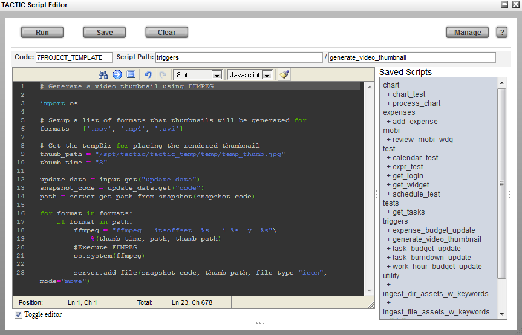
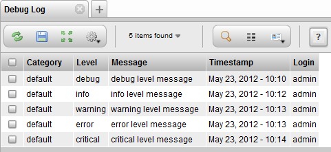
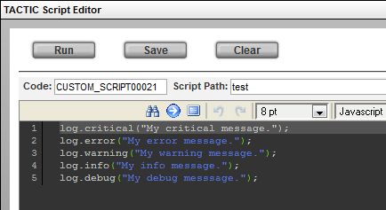
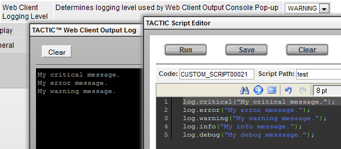

Introduction
The term "asset" is used often, and has many different meanings in different industries and even in different areas of the same production facility. In TACTIC, an asset is an atomic entity with metadata and files associated with it. To avoid confusion, the TACTIC assets are called "searchable objects," shortened to sObjects.
sObjects
sObjects are the atomic entities (or assets) that TACTIC uses to manipulate data and check in files. An sObject can be any entity required in a production. Examples of sObjects include shots, textures, users, tasks, production notes, and so on.
Every sObject must belong to a search type, also known as sType. Search types are a set of unique string entities that serve to classify all variations of sObjects. Search types are registered in the "search_object" table in the "sthpw" database. This table defines the properties for each search type, and is used to ensure that sObjects adheres to their search type properties. For instance, in a custom project, you may have a custom/shot sType created for shot. Once it’s registered, you can add shot entries in the shot table that it generates. The shot entries are the shot sObjects.
It is technically possible to store data on assets anywhere, but the TACTIC approach is to use an SQL database so sObject data can be tracked in the database and rules can be enforced. In TACTIC, each sObject is represented as a table in the database. All sObjects for your project are stored in a project-wide database and cross-project sObjects (for example, those related to users) are stored in the main TACTIC database "sthpw."
The TACTIC architecture is an MVC architecture with the following major components:
SObject - Model(M) | Provides the data model. All interactions with the data model use sObjects and their derived classes. |
Widget - View(V) | Provides the display model, which determines the user interface and how users interact with the web application. The display architecture is built upon hierarchical widgets that are SObject-aware (that is, they use sObjects to define the interface). |
Command - Command© | Provides higher-level interactions with the data model. All actions affecting the data model or the filesystem must go through a command layer so that the changes can be tracked and completely undoable should something go wrong. |
Search | Provides a search model so widgets can obtain the SObjects they need to complete the interface display. Each type of sObject has a registered name which is used in the search engine to identify which sType to search. This provides a consistent interface to access all sObjects regardless of the location of the sObject in the database or table. |
In summary, widgets make use of the Search, get SObjects, and use commands to change persistent data. The sObject communication unit binds the view layer with the data model.
Main Data Objects
SObjects (searchable objects) are atomic, self-contained units that contain attributes. A particular sObject can be uniquely identified by two parameters: a search type and a search ID. Often these two parameters are combined into a "search key" defined as <search_type>|<search_id> (joined with the "|" character). Search keys allow you to uniquely identify any SObject using a single string.
Particular SObjects are obtained using the search engine, which generally returns a list of SObjects. The search engine is flexible enough to allow arbitrary bits of SQL code to be used for a search, although that approach is discouraged. (To maximize code reuse, it is better to put SQL code inside the low-level business objects that provide static functions to higher level parts of the framework.)
Widgets
Widgets are the atomic drawing units. Typically, widgets are SObject-aware and can perform and affect searches and draw SObjects. Widgets can contain children, and many function calls will traverse down to their children. For example, a widget can be assigned a search object. It will perform this search and pass the results to all of its children widgets, who will make use of the result as necessary.
One important widget function is the get_display() function, which draws widgets and can generate HTML. This function can be as simple as just drawing something that has nothing to do with sObject data, or can be a complicated function retrieving and displaying sObjects and all of their child sObjects.
Widgets determine how users interact with the web application. They have a number of useful properties that allow for the rapid development of web applications. For example, they can have a search assigned to them to locate and retrieve sObjects. They can typically perform actions across the search results, affecting multiple SObjects.
Widgets call events and listen to events, allowing for inter-widget communication. They interact with each other in the web application by registering events. For example, one widget, on initialization, may register itself as a listener for a named event. Another widget may call the named event upon an arbitrary action, at which point all widgets that are registered listeners for that event will be executed. This type of interaction allows for multiple actions to occur as a result of a user interaction, such as the click of a single button.
Checkin/checkout is the framework for filesystem interaction. All interaction within the checkin/checkout framework is done through the SObjects themselves so that they can determine their own checkin/checkout conditions and mechanisms. The checkin framework creates a snapshot SObject that is related to the original SObject through a search_id. It assigns a unique file ID for every transaction, and creates snapshot attributes for the SObjects.
Engineering requirements for a particular application must be gathered and translated into widgets, including definitions of the widgets' relationships to each other.
AJAX Widgets
TACTIC’s widget hierarchy falls naturally within the AJAX paradigm, where widgets are capable of redrawing themselves. Instead of refreshing the entire page, AJAX widgets actively gather the required information from the page and send only that information to the web server (as opposed to the entire contents of the page). The widget then processes the information and updates itself. This technique makes a much more interactive application because the web server only has to draw the individual widget element instead of the entire page. In addition to a faster and more interactive experience, AJAX widgets significantly reduce the overall load on the web server, making TACTIC far more scalable with the same resources.
TACTIC’s interface runs on top the the client API, therefore all interaction between the client and the server run on an XMLRPC layer resting on top of AJAX. This is very convenient for complex interactions between the client and the server.
Web Drawing Engine
This drawing engine is based on numerous interface platforms generally geared towards traditional application design. However, it has be adjusted to accommodate the unique web environment. A typical application would define a number of predefined widgets and assemble them in a hierarchical relationship.
Specialized widgets must be created to serve specific functions: for example, checkin/checkout widgets, download widgets, upload widgets, and navigation widgets.
Persistent Store
All metadata is stored in an industry-standard SQL database. The database tables and rows are clearly marked and readable, so it is easy to access the data directly. In today’s fast-changing environment, it is essential to be able to quickly read and understand the underlying data stored to be able to maintain proper support for diagnosing and fixing problems.
All data is accessed through sObject entities, which provide the object relational mappings to the database tables. In general, a single sObject is represented by a row in the table of a database. The table defines the type of SObjects stored in it, and there is usually a one-to-one relationship between the attributes of each sObject and the columns in the database.
Directory and File Naming Conventions
It is just as critical to be able to navigate the filesystem and understand what is located there. Therefore, advanced naming conventions are filtered through naming classes, which use clear procedures to create filenames based on metadata in the database. On the other hand, naming conventions can be driven by some expressions such as {sobject.code}_{snapshot.context}_v{snapshot.version}.{ext}.
Directories and file naming are handled slightly differently. TACTIC builds file names procedurally and then stores them in the database. On the other hand, TACTIC never stores directory names directly in the database, but always builds them up procedurally. This additional level of abstraction provides the opportunity to reorganize your asset structure as needed (because the directory structure isn’t hard-coded). Note that there may be other dependencies that are outside the control of TACTIC, so great care must be taken should you decide to reorganize the directory structure of your assets.
Outputting to the Debug_Log Table With The TacticServerStub.log() Function
The TACTIC Script Editor allows for Javascript and Python based scripts to be written and stored in a "custom script" sObject. These scripts harness the power of Javascript in the web browser along with the power of the Python TACTIC Client API. They can be structured to run on a general execution, by a trigger or, they can be attached to a button to execute for a specific sObject.
One of the main benefits with using this method of custom scripting in TACTIC is that the script writer does not have to have direct access to the server’s file system.

The TacticServerStub.log() method writes to the table named debug_log in the sthpw database.
The first parameter of the TacticServerStub.log() method is named level. The argument for level can be one of the following keywords:
level | critical |
error | warning |
info | debug - arbitrary debug level category |
The TacticServerStub.log() method can be used as follows:
var server = TacticServerStub.get()
server.log('debug','My log message for the debug group.')The debug level argument provides the convenience of grouping the Debug Log table by debug levels. This table can be found under:
Admin Views → Server → Debug Log

Note
These 5 debug levels are arbitrary.
The only purpose the levels serve are to group the messages when they are sorted in the table.
Outputting to the TACTIC Web Client Output Log With The log Methods
While writing scripts in the TACTIC Script Editor, messages can be output to the Web Client Output Log.
Below are the 5 Javascript methods in use. The most vocal method, log.critical(), is at the top:

Below is the Output Log console from above the sample script. It can be found under:
Main Gear menu → Tools → Web Client Output Log.
The level of the log messages which appear in the Javascript Output Client Log can be controlled. The level can be adjusted under: My Admin → User Preferences.
Below is a table to illustrate what the setting for each level will display
critical setting | only display messages that are from log.critical() |
error setting | only display messages that are from log.critical() or log.error() |
warning setting | only display messages that are from log.critical() or log.error() or log.warning() |
info setting | only display messages that are from log.critical() or log.error() or log.warning() or log.info() |
debug setting | only display messages that are from log.critical() or log.error() or log.warning() or log.info() or log.debug() |
For example, if the Web Client Logging Level is set in the preferences to the warning level, we will only see messages that are from log.warning(), log.error() and log.critical(). ie. Only messages at the same level or above that level will be displayed in the Web Client Output Log.

Client API JavaScript Samples
Example 1: Insert A New sObject
// INSERT A NEW SOBJECT
var server = TacticServerStub.get();
var code = "truck";
var asset_name = "truck";
var description = "A model of a truck.";
var search_type = "toy_factory/lego_set";
var project = "toy_factory";
var data = {
'code': code,
'name': asset_name,
'description': description
};
var search_key = server.build_search_key(search_type, code, project);
var result = server.insert(search_type, data);
log.debug(result);Results after insert:
Example 2: Get An sObject by Its Search Key
// GET BY SEARCH_KEY
var server = TacticServerStub.get();
var search_type = "toyrus/lego_set";
var code = "model_crane";
var project = "toyrus";
var search_key = server.build_search_key(search_type, code, project);
var result = server.get_by_search_key(search_key);
alert(result.description);
server.log("debug", result);Results after get_by_search_key():
Example 3: Update An Existing sObject
// UPDATE EXISTING SOBJECT
var server = TacticServerStub.get();
var code = "model_crane";
var project = "toyrus";
var asset_name = "model crane";
var description = "Revised description of a crane.";
var search_type = "toyrus/lego_set";
var data = {
'code': code,
'name': asset_name,
'description': description
};
var search_key = server.build_search_key(search_type, code, project);
var result = server.update(search_key, data);
server.log("debug", result);Results after update:*Example 4: Retire An Existing sObject*
// RETIRE AN EXISTING OBJECT
var server = TacticServerStub.get();
var search_type = "toyrus/lego_set";
var code = "model_crane";
var project = "toyrus";
var search_key = server.build_search_key(search_type, code, project);
var results = server.retire_sobject(search_key);
server.log("debug", result);Results after retire:
This is a service within TACTIC that enables specified folders to be “watched”. Any file dropped into a registered folder will be checked in.
Currently the implementation will create an entry per file. Subsequent drops of a file with the same name will be checked in as a new version. It is designed for high volume ingestions.
To enable the service, it must be registered in the tactic-conf.xml configuration file:
<services> <enable>tactic|watch_folder</enable> </services>
This will execute both “TACTIC” and “watch folder” services. This will just allow the service to be enabled. Specific watch folders can be registered by adding items in the “sthpw/watch_folder” sType.
To access this sType to add watch folders, follow these steps:
Go to the Administrative layer of your TACTIC project by selecting the Admin bar at the top of the page after signing in. Only users in the Administrative group or users with Admin permissions will have the Admin bar and have access to the Administrative layer. Open the sidebar. Under the Admin Views section, go to Schema Views > Global Config/Data and open the "Watch Folder" view. Add an entry by selecting the "+" (plus) button in the shelf in the view. In this view there will be 4 columns you will need to fill in to define the watch folder: Project Code - The name of the project you are working in i.e. sample_project Base Dir - The name of the directory that will be "watched". This is where you drop the files to be checked in to TACTIC. i.e. /home/tactic/drop. Search Type - The sType or table that the assets or files will be checked in to i.e. sample_project/media Process (optional) - The pipeline process that the asset will be checked into. By default, the asset is checked into the "publish" process, if no process is specified. This is sufficient when no pipeline processes have been defined, or the asset doesn’t need to be checked into a certain process. Otherwise, the process needs to be specified i.e. publish
Save the entry by selecting the floppy disk icon in the shelf. If a new Watch Folder entry is added, restart the TACTIC service. To do this, if you SSH into the server and you are logged in as "root", navigate to the TACTIC install and type, "service tactic restart". This will restart the TACTIC service and the Watch Folder will be ready for use.
Limitations
Currently, this only checks in files at the base folder. Sub folders are not yet supported. This means that all files will be checked into the repository at the base folder. This is a pretty severe limitation as it prevents the use of categories sub folder to organize the assets on the repository. Command line usage
Usage: watch_drop_folder.py [options]
Options: -h, --help show this help message and exit -p PROJECT, --project=PROJECT Define the project_name. -d DROP_PATH, --drop_path=DROP_PATH Define drop folder path -s SEARCH_TYPE, --search_type=SEARCH_TYPE Define search_type. -P PROCESS, --process=PROCESS Define process.
Watch Folder Ingestion to Different Directories
By default, the Watch Folder will drop assets into the “assets” folder of the TACTIC installation location or /home/tactic/assets on a Virtual Machine, where they are seen by TACTIC. The assets will be stored under the “assets” folder according to the defined directory and file naming conventions. However, there is a way to ingest the assets into a different directory location other than the “assets” folder. The instructions below will describe two required actions needed to set up the watch folders to ingest to different directories: How to set up the Web Server Configuration and TACTIC Configuration so that the new directories can be seen by the Web Server and TACTIC and the assets can still be previewed in TACTIC How to set up the watch folder to ingest to different directory locations
Configuring the Web Server and TACTIC
Shell into the IP address of your TACTIC installation or Virtual Machine In the shell, type: cd /etc/httpd/conf.d/ Type: vi tactic.conf This will open the Vim Editor in the shell to edit the tactic.conf file. This is the web server configuration file. Near the top of the file you will see that there is XML that looks similar to this:
<Directory "/home/tactic/assets" > Options FollowSymLinks AllowOverride None Order Allow,Deny Allow from All #If using Apache 2.4, include the following line #Require all granted </Directory>
This configuration is to give the web server permission to view this directory. You will need to write entries for every other device you would like the web server to see. Continue to write these entries underneath the existing ones following the same structure and formatting like the following:
<Directory "/example/directory/path/assets" > Options FollowSymLinks AllowOverride None Order Allow,Deny Allow from All #If using Apache 2.4, include the following line #Require all granted </Directory>
5) Near the bottom of the file, there is a section that looks like the following:
# This redirects to a common URL for centralized actions that will # occur within tactic. Alias /context /home/tactic/tactic/src/context Alias /assets /home/tactic/assets Alias /doc/ /home/tactic/tactic/doc/
An alias and the absolute path for the device directory you added will need to be defined. It would be something like this:
# This redirects to a common URL for centralized actions that will # occur within tactic. Alias /context /spt/tactic/tactic/src/context Alias /assets /spt/tactic/assets Alias /doc/ /spt/tactic/tactic/doc/ Alias /example /example/directory/path/assets
The alias does not need to be the last folder in the directory. It can be a generic alias that would clearly define this directory as a unique path.
7) Save and exit the changes to the file. 8) Go to the /home/tactic/tactic_data/config directory (or TACTIC install directory where tactic_data/config is located). 9) Type: vi tactic-conf.xml This will use the Vim Editor to open the tactic-conf.xml file. 10) Under the <checkin> tag, there is a tag called <asset_base_dir> that needs to be set. To set the <asset_base_dir>, define an alias for the same full directory path you defined in the tactic.conf file:
<asset_base_dir>{ "sample": "/example/directory/path/assets" }</asset_base_dir>
11) You will then need to set the <web_base_dir> under the <checkin> tag. The directory that you define for the <web_base_dir> is the directory as seen by the browser and is meant as TACTIC configuration to view the assets. The alias defined needs to be same alias defined in the <asset_base_dir>. The directory for the <web_base_dir> needs to be the same as the alias defined in the configuration for the web server (in the tactic.conf file):
<web_base_dir>{ "sample": "/example" }</web_base_dir>
12) Save the changes and close the file. 13) Restart the web server and TACTIC to have the changes take effect. To do this, if using a shell, login as the “root” user, then type the following to restart the web server:
service httpd restart (CentOS) OR service apache2 restart (Debian/Ubuntu Linux)
Then, to restart TACTIC: service tactic restart
All of this setup will work with the watch folder for ingestion and check-in to a device and the device manager. It will allow the preview to work in TACTIC as well.
Directory Setup with Watch Folder
Once the TACTIC and web server configuration is in place, the watch folder can be set up to ingest to a different directory. This setup requires the use of both the sthpw/watch_folder and sthpw/naming sTypes, which are both accessible in the Administrative layer of TACTIC under the Global Config/Data menu in the sidebar.
Establish a Watch Folder for the directory you want to ingest assets into according to the steps described in the “TACTIC - Watch Folder Service”. However, the exception here is that a process will need to be defined in the “Process” column of the Watch Folder sType. The process set in the “Process” column of the Watch Folder sType is the same as the alias of the directory as defined in the tactic-conf.xml file. Refer to steps 8 - 12 in the “Configuring the Web Server and TACTIC” section.
Example: In the tactic-conf.xml file,
<asset_base_dir>{ "sample": "/example/directory/path/assets" }</asset_base_dir>
<web_base_dir>{ "sample": "/example" }</web_base_dir>
Therefore, in the Watch Folder sType table under the “Process” column, the alias “sample” would be entered.
Save the entry by selecting the floppy disk icon in the shelf. Open the sidebar. Under the Admin Views section, go to Project Essentials and open the "Naming" view. If not done already, for the same sType you are ingesting the assets into from the Watch Folder, create a naming entry for that same sType by defining a directory and file naming convention. For the already present or newly added sType naming entry, in the “Context” column of the “Naming” view for that entry, the same alias used in the <asset_base_dir> and <web_base_dir> must be set here in accordance with the following format: alias/*.
Based on the example provided in step 2, the alias was “sample”. Therefore, this would be the context for the sType naming entry: sample/*
For the same sType entry, in the “Base Dir” column of the “Naming” view, the same alias used in the <asset_base_dir>, <web_base_dir> and now context column must be set here in accordance with the following format: alias.
Based on the example provided in step 2, the alias was “sample”. Therefore, this would be the base directory for the sType naming entry: sample
Save the changes to the “Naming” view by pressing the floppy disk icon in the table shelf Restart TACTIC to have the changes take effect. To do this, if using a shell, login as the “root” user, then type the following to restart TACTIC: service tactic restart
When assets are dropped into the Watch Folder now, the assets will be checked into TACTIC and placed under the directory specified in the TACTIC configuration files according to the naming convention defined for the sType to which the assets are being ingested.